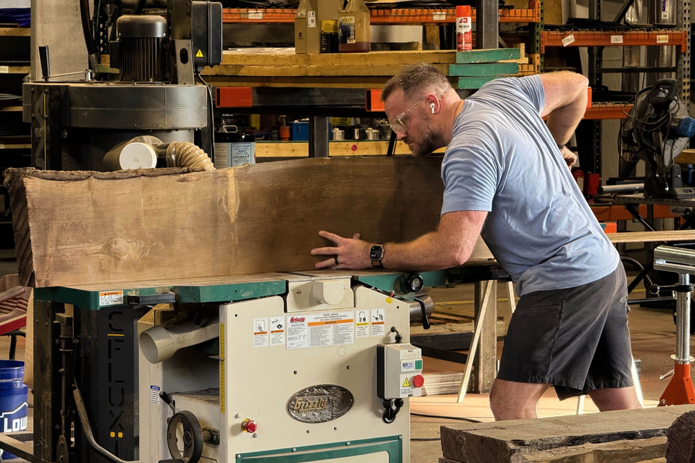
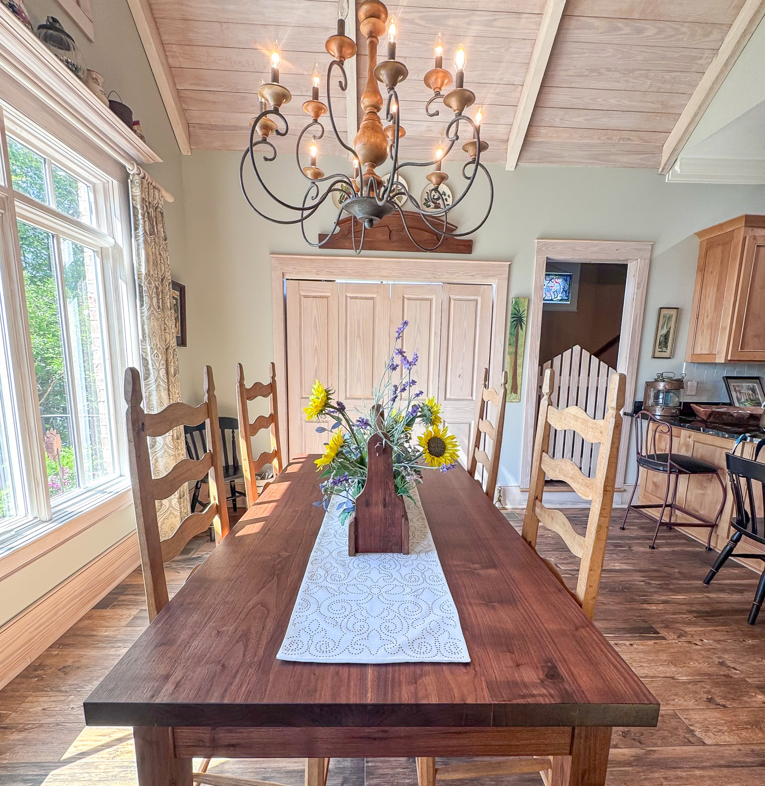
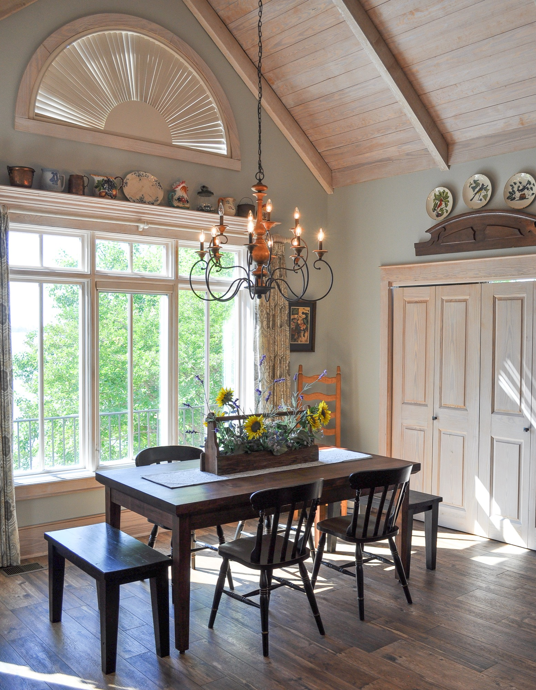
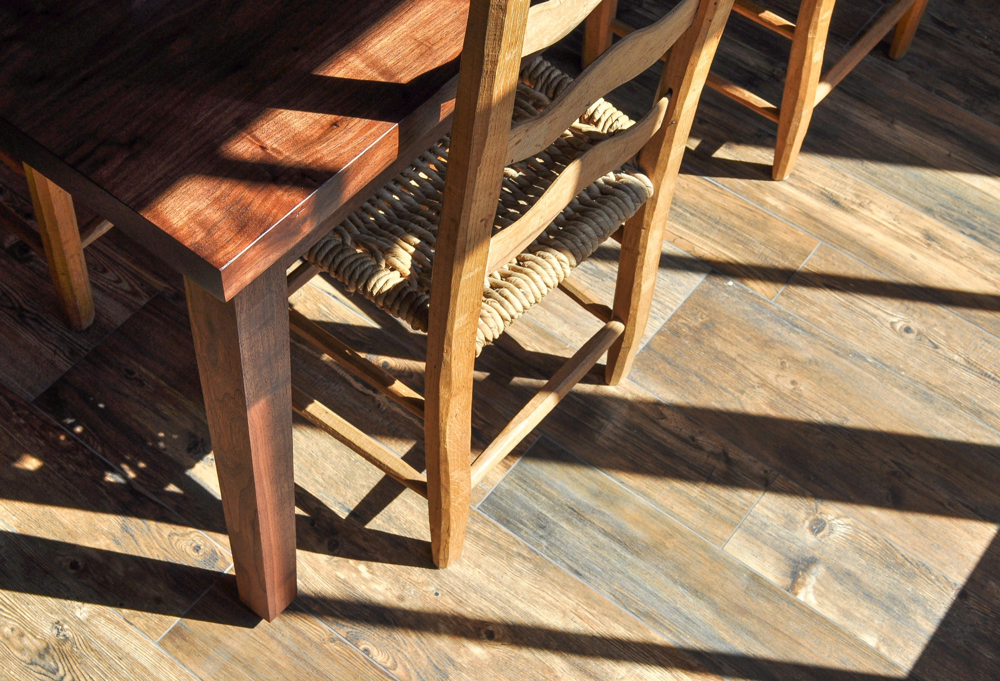
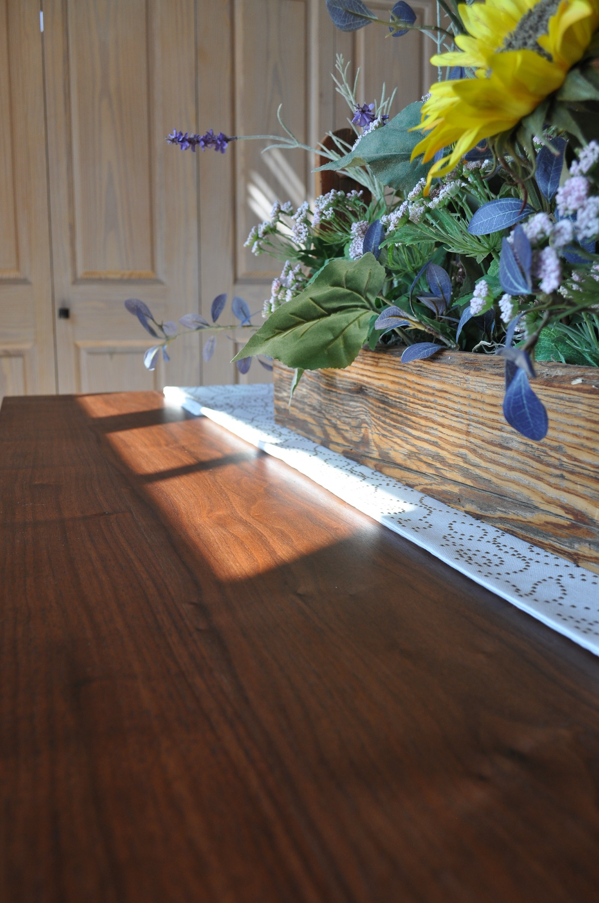
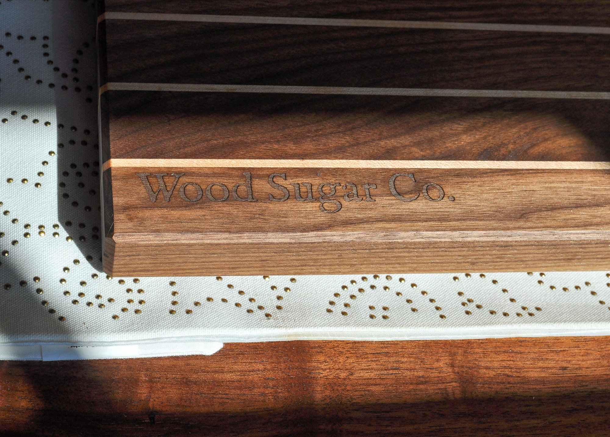

Press & Media Kit
Built for Generations
Wood Sugar Company builds heirloom hardwood furniture in Chapin, South Carolina. Locally sourced. No metal fasteners. Traditional joinery. Founded in 2026 by Cole Fisher, a former PwC Risk and Regulatory Senior Manager who returned to his tools after a decade in consulting.
Wood Sugar Company is a one-maker studio building farm tables in locally sourced hardwoods and reclaimed lumber — joined the old way, with mortise-and-tenon, draw-bored, and wedged through-tenons. Every piece is finished in plant-based hardwax oil and built to be passed down to future generations, along with the stories they've facilitated throughout the years.
Tables are the heart of the shop, but we try not to waste anything the tree gives us. The offcuts become cutting boards and smaller pieces — we use as much of every board as we can.
Every table carries a brass builder's plate engraved with the harvest location, species, finish, year built, the craftsman, the family it was built for, and a Latin inscription — RELINQUE · QUOD · DURAT, “Leave what endures.”
Mortise-and-tenon and draw-bore joinery — the way furniture was made before it became disposable.
Solid hardwood, built to be handed down — not the flat-pack furniture you replace every few years.
Carolina hardwoods and reclaimed lumber. The first table's walnut was harvested in Laurens, South Carolina.
Right out of college, Cole Fisher went to work for Habitat for Humanity, leading crews salvaging antique heart pine floor joists from razed homes to build tables for Habitat's annual auction. He loved that part more than he expected.
A recently acquired MBA helped land Cole a job at PwC in the Cyber, Risk, Regulatory, and Financial Crimes practice — eleven years, five as a senior manager. C-suite clients, big cities, fancy meals. The suits were sharp. The weekends were theoretical. He never put down his tools.
Then an unexpected layoff created an unexpected opportunity. When Cole told everyone he was leaving consulting to build furniture, the only surprise was that it took him this long.
He'd spent a decade on work that didn't last. Now he builds things that do.
Leave something that matters.

Cole Fisher milling a walnut slab at the jointer — Chapin, SC.
| Founded | 2026 · Chapin, South Carolina |
|---|---|
| Creator / Craftsman / Person-in-the-loop | Cole Fisher — sole maker; former PwC Risk and Regulatory Senior Manager |
| What we make | Heirloom dining & farm tables — plus cutting boards and smaller goods from the offcuts |
| Materials | Locally sourced hardwoods and reclaimed lumber |
| Joinery | Mortise-and-tenon, draw-bore, wedged through-tenon |
| Finish | Plant-based hardwax oil |
| Maker's mark | Brass builder's plate — harvest location, species, finish, year, craftsman, family, and the motto RELINQUE · QUOD · DURAT |
| Price | Varies by materials and style |
| First table | Sold May 2026 — a solid black walnut dining table, its wood harvested in Laurens, SC, to a Chapin family |
| In the news | Featured in the Free Times / The Post and Courier, July 2026 |
| Online | woodsugarco.com · @woodsugarco on Instagram, Facebook, YouTube, Pinterest, TikTok |
For the first time in my professional life, I want to work for me.
What if I could automate the things I don't want to do, so I can do the things that matter?
I doubled down. I want to build high-end tables, I want them to be heirloom … I want to build with care. I want to touch and manipulate the wood with my hands where it matters.— to the Free Times / The Post and Courier, July 2026





The ladder-back chairs in this photograph are the work of Archie Hunter, a third-generation chairmaker from Florence, South Carolina. Cole's mother bought them new from the Hunters in 1975, to match two rocking chairs her grandparents purchased 40 years before. Simple, well-made, and beautiful — South Carolina grown.
Free for editorial use with credit to Wood Sugar Company, Chapin, SC. High-resolution originals available on request. Commercial / advertising use by written permission only.
Free Times · The Post and Courier — July 6, 2026
For Immediate Release
CHAPIN, S.C. — Wood Sugar Company, a new one-person wood shop building heirloom hardwood furniture, has launched in Chapin, South Carolina — building solid-hardwood dining and farm tables by hand, joined the old way and made to be handed down. It was founded by a former PwC Risk and Regulatory Senior Manager who left consulting in 2026 to build furniture full-time. Commissions are open.
The studio has already delivered its first table — a solid black walnut dining piece, its wood harvested in Laurens, South Carolina — to a family in Chapin. Every piece is joined with traditional mortise-and-tenon and draw-bore work, finished in plant-based hardwax oil, and carries a brass builder's plate engraved with the wood, the year, the family it was built for, and a Latin inscription: RELINQUE · QUOD · DURAT.
Fisher runs the studio's back office with AI — the same kind of technology that upended his old industry — so his hands stay free for the bench. But the furniture itself is deliberately old: built to outlast the person who bought it, signed by its maker, and made to be handed down. “Leave something that matters,” as he puts it.
For interviews, a shop visit, or high-resolution images:
Cole Fisher · Wood Sugar Company · Chapin, South Carolina